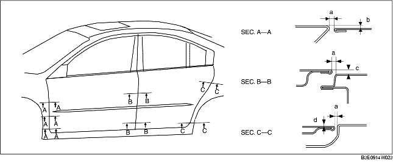

AJUSTE PUERTA
B3E091158010W04
1. Medir la diferencia de distancia y altura entre las puertas delantera y trasera y la carrocería.
2. Aflojar los pernos de fijación de las bisagras de la puerta o los tornillos de fijación del elemento de contacto de la cerradura de la puerta y ajustar la puerta.
-
Juego estándar
-
a: 2,7-4,7 mm (0,11-0,18 in)
-
b (superior): -1,0-1,0 mm (-0,040-0,039 in)
-
b (medio): -0,5-1,5 mm (-0,020-0,059 in)
-
b (inferior): -0,3-1,3 mm (-0,027-0,051 in)
-
c (superior): -1,0-1,0 mm (-0,040-0,039 in)
-
c (inferior): -0,5-1,5 mm (-0,020-0,059 in)
-
d (superior): -1,0-1,0 mm (-0,040-0,039 in)
-
d (inferior): -0,5-1,5 mm (-0,020-0,059 in)

3. Apretar los pernos o los tornillos.